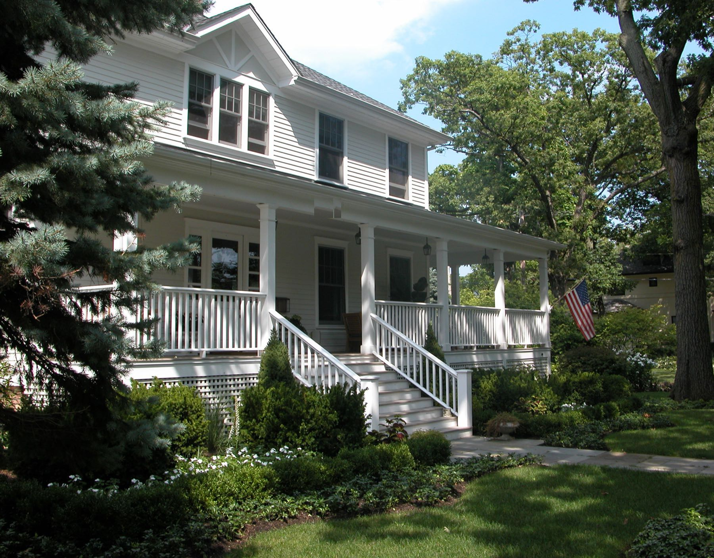
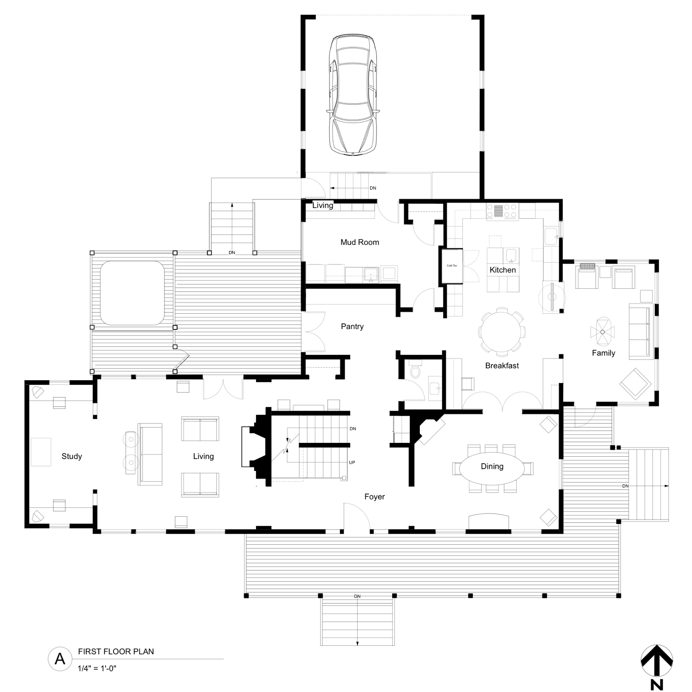
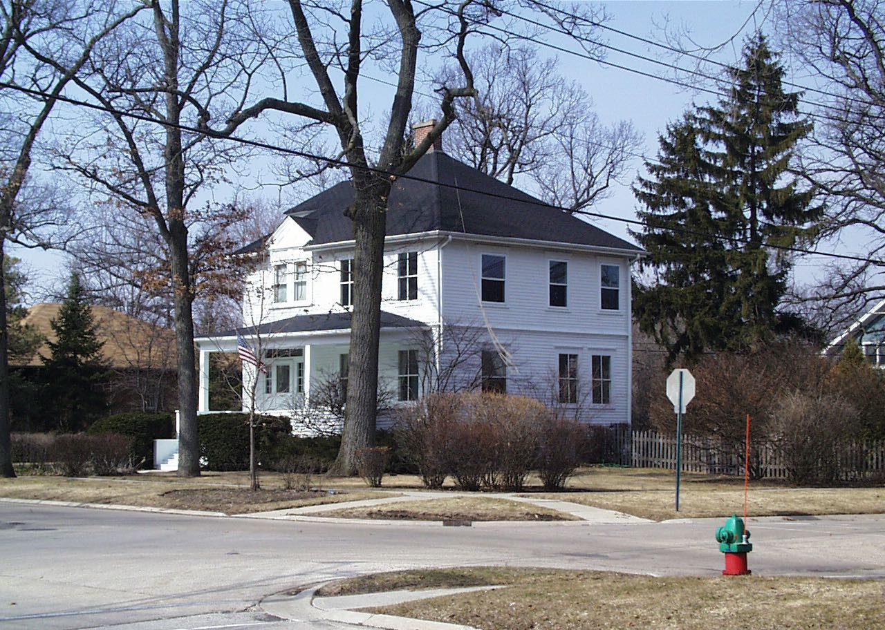
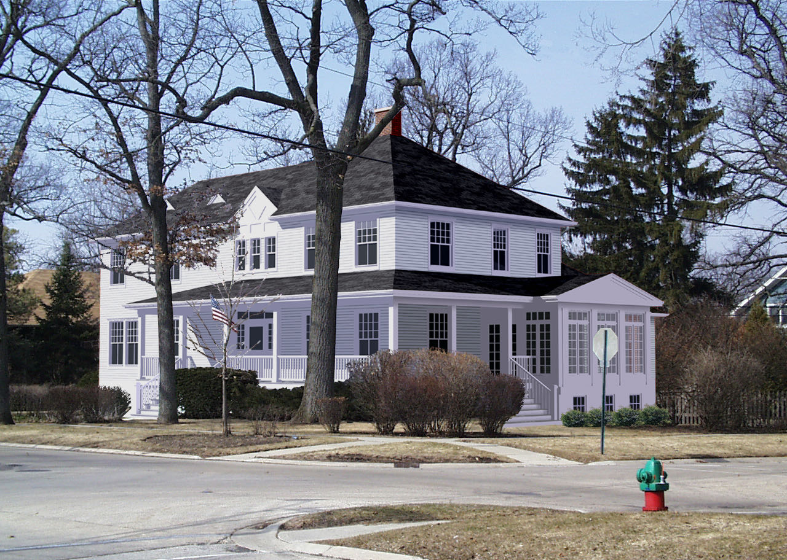
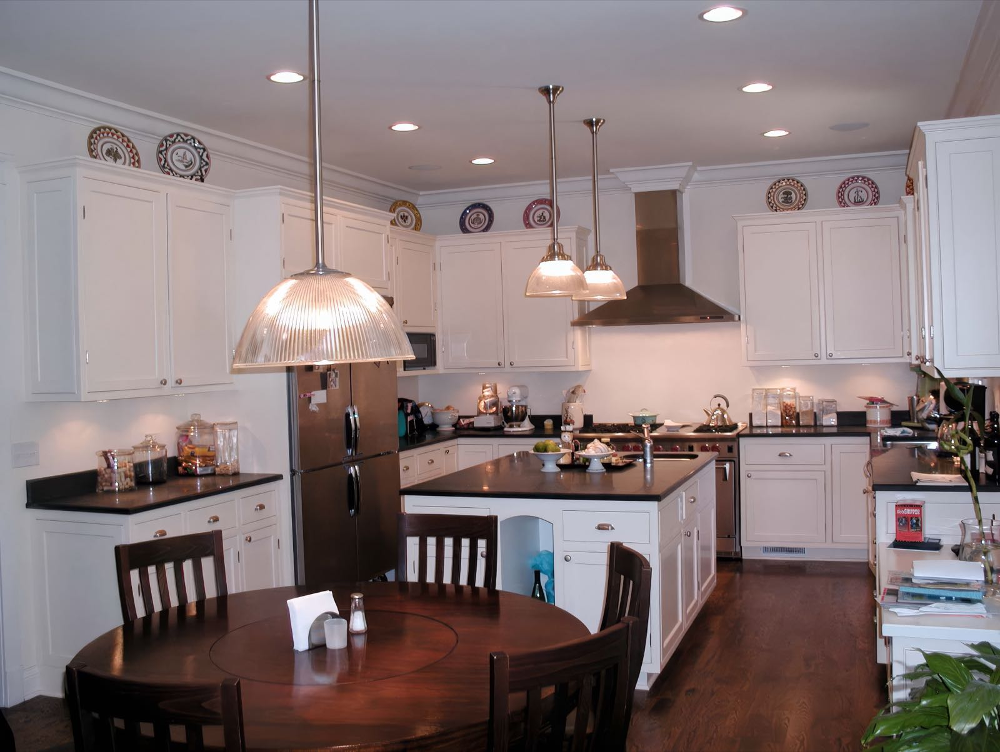
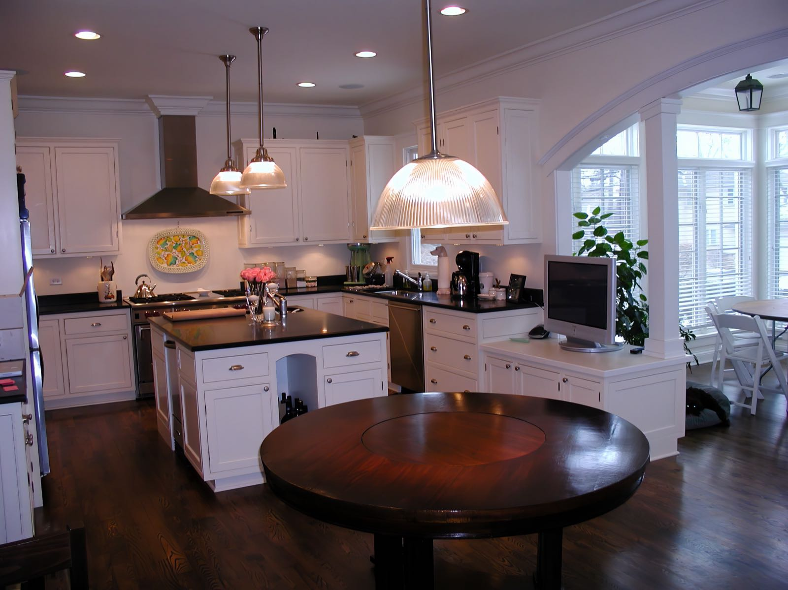
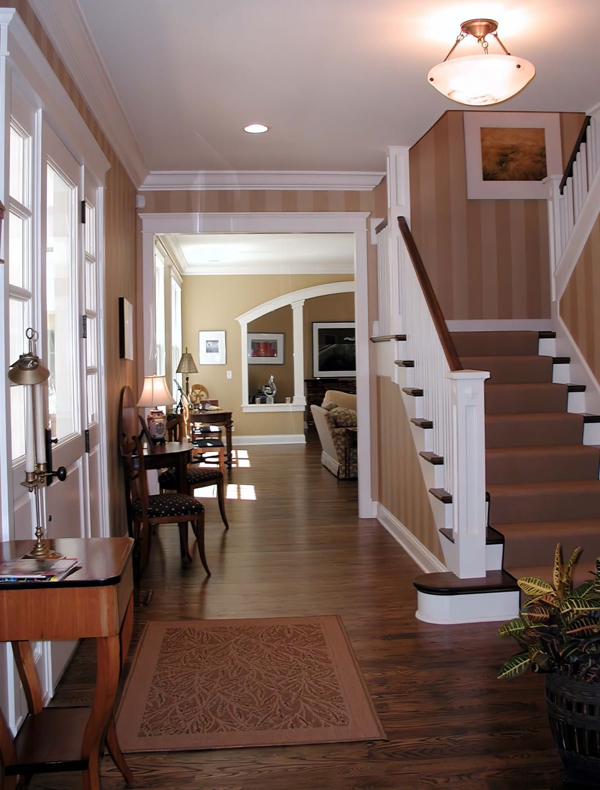
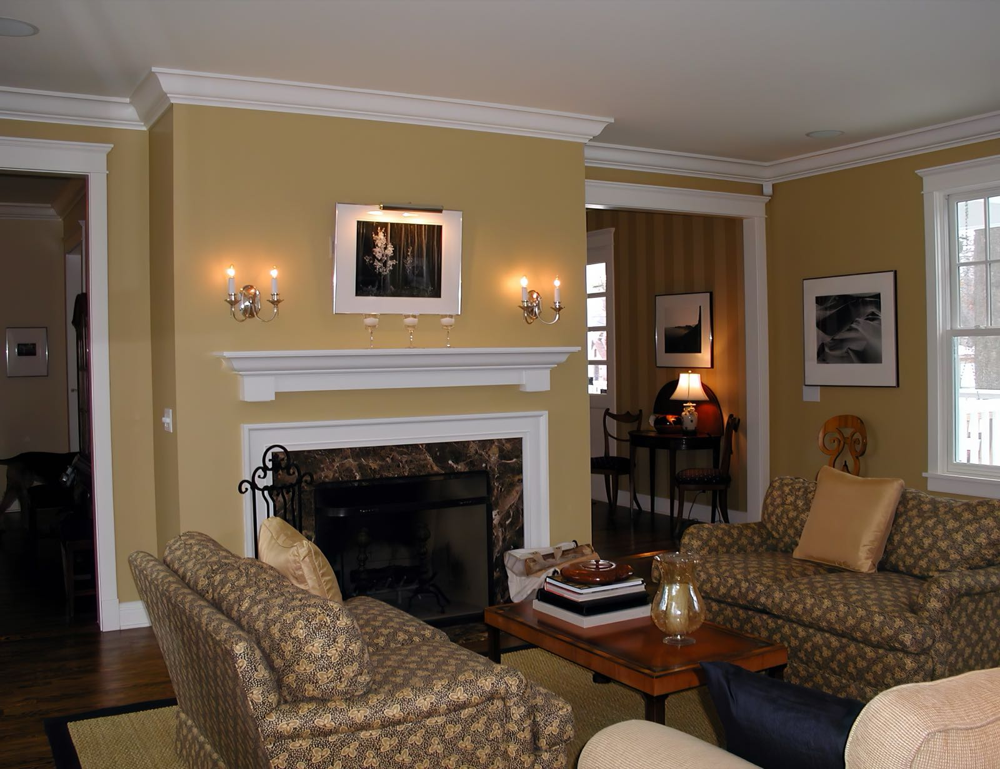
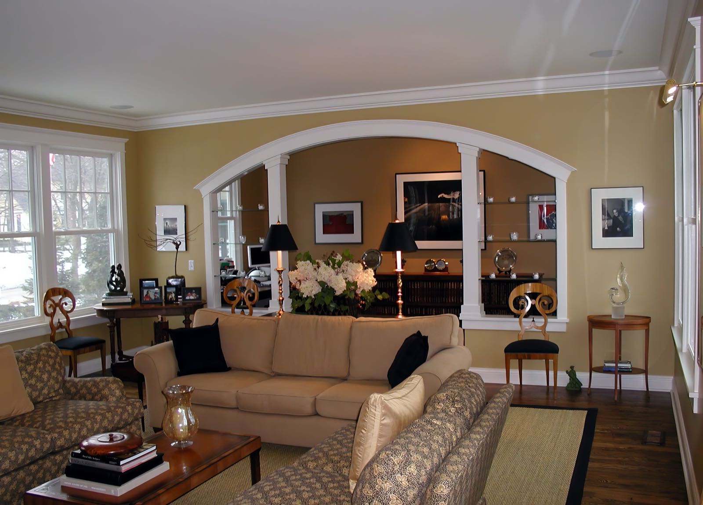

Residential · Addition
Traditional / Historic
Private Residence
Lake Bluff, Illinois. A house from around 1902 on a prominent corner, extended without letting the additions announce themselves.

renovation
family, mudroom
the corner
Originally constructed circa 1902 on Center Avenue in Lake Bluff, this historic residence was expanded to accommodate a new living room, kitchen, pantry, family room, and mudroom/laundry area.
The additions were carefully designed to integrate seamlessly with the original architecture while introducing the conveniences of contemporary living.
The front porch was extended around the corner of the house to connect with the new family room and strengthen the home's relationship to its prominent location at Center and Evanston Avenues.
Where the addition
picks up

The original rooms — study, living, foyer, dining — hold the street front. Kitchen, breakfast, family room, pantry and mudroom run back from them toward the garage, so the new work sits behind the historic elevation rather than beside it. Porch decking wraps from the front around to the family room.
Before, and the
proposal


New rooms, old
proportions




